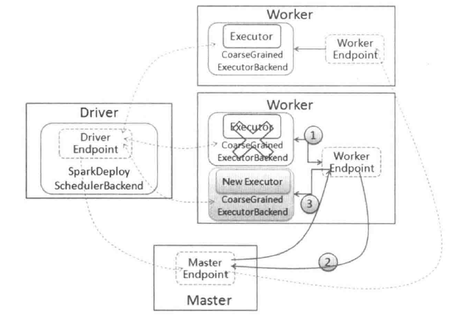
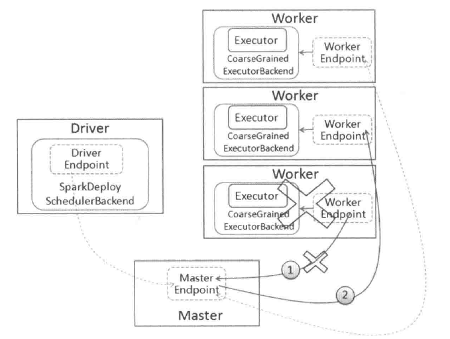

Spark学习笔记(6) —— 容错和HA
所谓容错是指一个系统的部分出现错误的情况还能够持续地提供服务，不会因为一些细微的错误导致系统性能严重下降或者出现系统瘫痪。在一个集群出现机器故障、网络问题等是常态，尤其集群达到较大规模后，很可能较频繁出现机器故障不能进行提供服务，因此对于分布式集群需要进行容错设计。
Executor异常
Spark支持多种运行模式，这些运行模式中的集群管理器会为任务分配运行资源，在运行资源中启动Executor，由Executor是负责执行任务的运行，最终把任务运行状态发送给Driver。下面以独立运行模式分析Executor出现异常的情况。

- 首先看Executor的启动过程：在集群中由Master给应用程序分配资源后，然后在Worker中启动ExecutorRunner，而ExecutorRunner根据当前的运行模式启动CoarseGrainedExecutorBackend进程，当改进程会向Driver发送注册Executor信息，如果注册成功，则在其内部启动Executor。Executor由ExecutorRunner进行管理，当Executor出现异常时，由ExecutorRunner捕获该异常并发送ExecutorStateChanged消息给Worker。
- Worker接收到ExecutorStateChanged消息时，在Worker的handleExecutorStateChanged方法中，根据Executor状态进行信息更新，同时把Executor状态信息转发给Master。
- Master接收到Executor状态变换消息后，如果发现Executor出现异常退出，则调用Master schedule方法，尝试获取可用的Worker节点并启动Executor，而这个Worker很可能不是失败之前运行Executor的Worker节点。该尝试系统会进行10次，如果超过10次，则标记改应用运行失败并移除，集群中也移除该应用。
Worker异常
Spark独立运行模式才有的是Master/Slave的结构，其中Slave是有Worker来担任的，在运行的时候会发送信条给Master，让Master知道Worker的试试状态，另一方面Master也会检测注册的Worker是否超时，因为在集群运行过程中，可能由于机器宕机或者进程被杀死等原因造成Worker进程异常退出。

当Worker初心超时时，Master调用timeOutDeadWorkers方法进行处理，在处理时根据Worker运行的是Executor和Driver处理。
- 如果是Executor，Master先把改Worker上运行的Executer发送消息ExecutorUpdated给对应的Driver，告知Executor已经丢失，同时把这些Executor从其应用程序运行列表中删除。另外，相关Executor的异常也需要按照之前Executor异常处理。
- 如果是Driver，则判断是否设置重新启动。如果需要重新启动，则调用Master.schedule方法进行调度，分配合适节点重启Driver；如果不需要重启，则删除该应用程序。
Master异常
Master作为Spark独立运行模式中的核心，如果Master出现异常，则整个集群的运行情况和资源将无法进行管理。Spark在集群运行的时候，Master将启动一个或多个Standby Master，当Master出现异常的时候，Standby Master将根据一定规则确定其中一个接管Master。在独立运行模式中，Spark支持如下几种策略：
- ZOOKEEPER：集群的元数据持久化到ZooKeeper中，当Master出现异常时，ZooKeeper会通过选举机制选举出新的Master，新的Master接管时需要从ZooKeeper获取持久化信息并根据这些信息回复集群状态。
- FILESYSTEM：集群的元数据持久化到本地文件系统中，当Master出现异常时，只要在该机器上重新启动Master，启动后新的Master获取持久化信息并根据这些信息回复集群状态。
- CUSTOM：自定义回复方式。
- NONE：不持久化集群的元数据，当Master出现异常时，新启动的Master不进行恢复集群状态，而是直接接管集群。